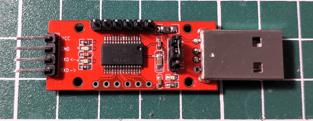
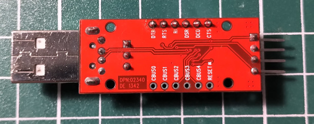

編譯lpc21isp燒錄程式
$ cd $ wget http://deb.debian.org/debian/pool/main/l/lpc21isp/lpc21isp_1.97.orig.tar.gz $ tar xvf lpc21isp_1.97.orig.tar.gz $ cd lpc21isp_197 $ make $ sudo cp lpc21isp /usr/bin/
安裝GNU GCC編譯器
$ sudo apt-get install gcc-arm-none-eabi -y
FT232R燒錄器，因為RST和ISP可以透過DTR、RTS控制，相當方便

